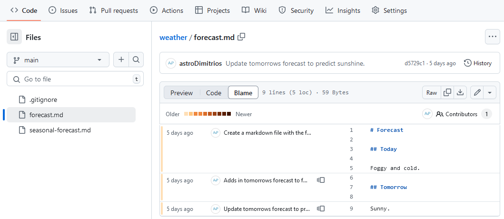

Conflicts
Last updated on 2026-06-10 | Edit this page
Estimated time: 30 minutes
Overview
Questions
- What do I do when my changes conflict with someone else’s?
Objectives
- Explain what conflicts are and when they can occur.
- Resolve conflicts resulting from a merge.
As soon as people start working in parallel, they’ll likely step on each other’s toes. This will even happen with a single person: if we are working on a piece of software on both our laptop and a server in the lab, we could make different changes to each copy. Version control helps us manage these conflicts by giving us tools to resolve overlapping changes. You will encounter conflicts no matter which branching model you choose. No model is more or less likely to produce conflicts. No model will make conflicts easier (or harder) to resolve. Using forks has no impact on how likely conflicts are to occur.
To create the conflict for all learners your co-instructor should follow along making the same changes the learners make. The co-instructors PR should be merged just before the learners open their PRs. If the co-instructor has the relevant permissions they can do this themselves while the instructor is still teaching.
To learn how to resolve conflicts we are going to create one on
purpose. We will do this by getting everyone to edit the same line of
the same file at once. Open an Issue on the
git-training-demo repository for adding yourself to the
list of authors in the CITATION.cff file. Make a note of
the Issue number to use as the prefix for your feature branch name.
Make sure you are on the main branch. Create your
feature branch:
OUTPUT
Switched to a new branch '7_add-citation-fitzroy'Add your name to the CITATION.cff file, underneath any
existing author names:
OUTPUT
cff-version: 1.2.0
message: "Met Office Colleagues and Partners"
authors:
- family-names: "Theodorakis"
given-names: "Dimitrios"
orcid: "https://orcid.org/0000-0001-9288-1332"
- family-names: "FitzRoy"
given-names: "Robert"
title: "Met Office Git Training Demo"
version: 2.0.4
doi: 10.4321/zenodo.1234
date-released: 2024-09-23
url: "https://github.com/MetOffice/git-training-demo"Add and commit your changes:
OUTPUT
[7_add-citation-fitzroy a3c5e13] "Adds Robert Fitzroy as an author"
1 file changed, 2 insertions(+)Push your changes to your GitHub fork:
OUTPUT
Enumerating objects: 5, done.
Counting objects: 100% (5/5), done.
Delta compression using up to 4 threads
Compressing objects: 100% (3/3), done.
Writing objects: 100% (3/3), 354 bytes | 354.00 KiB/s, done.
Total 3 (delta 2), reused 0 (delta 0), pack-reused 0
remote: Resolving deltas: 100% (2/2), completed with 2 local objects.
To github.com:mo-fitzroy/git-training-demo.git
f87bb5c..a3c5e13 7_add-citation-fitzroy -> 7_add-citation-fitzroy
branch '7_add-citation-fitzroy' set up to track 'origin/7_add-citation-fitzroy'.Open a Pull Request
Head back to your fork on GitHub and open a PR to contribute your
changes upstream to the main git-training-demo repository.
Fill out the template like you did in the previous episode.
At the bottom of your PR GitHub is telling us This branch has
conflicts that must be resolved and the conflicting file is
CITATION.cff.
Go to the main git-training-demo repositories code tab
and look at the contents of CITATION.cff:
OUTPUT
cff-version: 1.2.0
message: "Met Office Colleagues and Partners"
authors:
- family-names: "Theodorakis"
given-names: "Dimitrios"
orcid: "https://orcid.org/0000-0001-9288-1332"
- family-names: "Hogan"
given-names: "Emma"
title: "Met Office Git Training Demo"
version: 2.0.4
doi: 10.4321/zenodo.1234
date-released: 2024-09-23
url: "https://github.com/MetOffice/git-training-demo"Someone else has added their name before our PR could be merged. These changes now conflict with the one you made.
If you’re working through this lesson on your own, you won’t see a conflict. You should still follow the materials to learn what to do when you encounter a conflict.
Blame
GitHub lets you see who made changes to the file you are looking at in the Code viewer. Click on the Blame button:

The image above shows blame on the weather repositories
forecast.md file. The far left shows how long ago the
commit was that changed those lines. Then the commit message is
displayed before the file contents. Click on the little page icon after
a commit message to see previous commits which altered the same lines.
Try using blame on the CITATION.cff file to see who added
the conflicting change.
Compare changes
In the git-novice lesson we learnt how to diff between commits on the same branch. You can also look at diffs between branches even if they are on a different fork using GitHub.
To see a difference for a repository add /compare to the
end of the repository url.
- Navigate to:
https://github.com/MetOffice/git-training-demo/compare/, and click on the compare across forks link. - Click on the head repository dropdown and find your fork.
- Click on the compare dropdown and select your feature branch.
A diff should appear comparing your fork’s feature branch with the
upstream repositories main branch.
Resolving Conflicts
We’re going to resolve the conflict by merging in the
main branch into our feature branch
7_add-citation-fitzroy:
gitGraph
accDescr {A git graph showing the main branch being merged
into the 7_add-citation-fitzroy branch to resolve merge conflicts.}
commit id: 'cdb7fa6'
branch 7_add-citation-fitzroy
commit id: 'a3c5e13 Adds Robert Fitzroy as an author'
checkout main
commit id: 's7dja9o'
checkout 7_add-citation-fitzroy
merge mainFirst we need to make sure our fork’s main branch is in
sync with the upstream repository. Navigate to your fork on GitHub and
click on the Sync fork button.
In your local copy of your fork, update the main
branch:
Switch back to the feature branch:
OUTPUT
Switched to branch '7_add-citation-fitzroy'Merge in the main branch:
OUTPUT
Auto-merging CITATION.cff
CONFLICT (content): Merge conflict in CITATION.cff
Automatic merge failed; fix conflicts and then commit the result.Git is warning us about the conflict. We are still merging, if you
run git status you will see:
OUTPUT
On branch 7_add-citation-fitzroy
Your branch is up to date with 'origin/7_add-citation-fitzroy'.
You have unmerged paths.
(fix conflicts and run "git commit")
(use "git merge --abort" to abort the merge)
Unmerged paths:
(use "git add <file>..." to mark resolution)
both modified: CITATION.cff
no changes added to commit (use "git add" and/or "git commit -a")The message tells us both modified the
CITATION.cff file since both main and our
feature branch modified this file.
If we look at the CITATION.cff file now:
OUTPUT
cff-version: 1.2.0
message: "Met Office Colleagues and Partners"
authors:
- family-names: "Theodorakis"
given-names: "Dimitrios"
orcid: "https://orcid.org/0000-0001-9288-1332"
<<<<<<< HEAD
- family-names: "FitzRoy"
given-names: "Robert"
=======
- family-names: "Hogan"
given-names: "Emma"
>>>>>>> dabb4c8c450e8475aee9b14b4383acc99f42af1d
title: "Met Office Git Training Demo"
version: 2.0.4
doi: 10.4321/zenodo.1234
date-released: 2024-09-23
url: "https://github.com/MetOffice/git-training-demo"Our change is preceded by
<<<<<<< HEAD. Git has then inserted
======= as a separator between the conflicting changes and
marked the end of the content downloaded from GitHub with
>>>>>>>. (The string of letters and
digits after that marker identifies the commit we’ve just
downloaded.)
It is now up to us to edit this file to remove these markers and reconcile the changes. We can do anything we want: keep the change made in the local repository, keep the change made in the remote repository, write something new to replace both, or get rid of the change entirely. Let’s replace both so that the file looks like this:
OUTPUT
cff-version: 1.2.0
message: "Met Office Colleagues and Partners"
authors:
- family-names: "Theodorakis"
given-names: "Dimitrios"
orcid: "https://orcid.org/0000-0001-9288-1332"
- family-names: "Hogan"
given-names: "Emma"
- family-names: "FitzRoy"
given-names: "Robert"
title: "Met Office Git Training Demo"
version: 2.0.4
doi: 10.4321/zenodo.1234
date-released: 2024-09-23
url: "https://github.com/MetOffice/git-training-demo"To finish merging, we add CITATION.cff to the changes
being made by the merge and then commit:
OUTPUT
On branch 7_add-citation-fitzroy
All conflicts fixed but you are still merging.
(use "git commit" to conclude merge)
Changes to be committed:
modified: CITATION.cffOUTPUT
[7_add-citation-fitzroy 312c561] Merge branch 'main' into 7_add-citation-fitzroyNow we can push our changes to GitHub:
OUTPUT
Enumerating objects: 7, done.
Counting objects: 100% (7/7), done.
Delta compression using up to 4 threads
Compressing objects: 100% (3/3), done.
Writing objects: 100% (3/3), 385 bytes | 128.00 KiB/s, done.
Total 3 (delta 2), reused 0 (delta 0), pack-reused 0
remote: Resolving deltas: 100% (2/2), completed with 2 local objects.
To github.com:mo-fitzroy/git-training-demo.git
a3c5e13..312c561 7_add-citation-fitzroy -> 7_add-citation-fitzroyYour PR on GitHub should now be ready to merge, after review of course.
Avoiding Conflict
Git’s ability to resolve conflicts is very useful, but conflict resolution costs time and effort, and can introduce errors if conflicts are not resolved correctly. If you find yourself resolving a lot of conflicts in a project, consider these technical approaches to reducing them:
- Pull from upstream more frequently, especially before starting new work
- Use topic branches to segregate work, merging to main via a PR when complete
- Make smaller more atomic commits
- Push your work when it is done and encourage your team to do the same to reduce work in progress and, by extension, the chance of having conflicts
- Where logically appropriate, break large files into smaller ones so that it is less likely that two authors will alter the same file simultaneously
Conflicts can also be minimized with project management strategies:
- Clarify who is responsible for what areas with your collaborators
- Discuss what order tasks should be carried out in with your collaborators so that tasks expected to change the same lines won’t be worked on simultaneously
- If the conflicts are stylistic churn (e.g. tabs vs. spaces),
establish a project convention that is governing and use code style
tools (e.g.
htmltidy,perltidy,rubocop, etc.) to enforce, if necessary
Conflicts on Non-textual files
What does Git do when there is a conflict in an image or some other non-textual file that is stored in version control?
Let’s try it with your weather repository. Suppose you
take a picture of the television forecast and call it
forecast.jpg. Jimmy has already created a feature branch to
add the image in.
If you do not have an image file of forecast available, you can create a dummy binary file like this:
OUTPUT
-rw-r--r-- 1 mo-eormerod 57095 1.0K Mar 8 20:24 forecast.jpgls shows us that this created a 1-kilobyte file. It is
full of random bytes read from the special file,
/dev/urandom.
Now, suppose you add forecast.jpg to your
repository:
OUTPUT
[add_forecast_image 8e4115c] Add picture of forecast
1 file changed, 0 insertions(+), 0 deletions(-)
create mode 100644 forecast.jpgSuppose that Jimmy has added a similar picture in the meantime. His
is a picture of a forecast from Chile, but it is also called
forecast.jpg. When you try to push, you get a familiar
message:
OUTPUT
To https://github.com/mo-eormerod/weather.git
! [rejected] add_forecast_image -> add_forecast_image (fetch first)
error: failed to push some refs to 'https://github.com/mo-eormerod/weather.git'
hint: Updates were rejected because the remote contains work that you do
hint: not have locally. This is usually caused by another repository pushing
hint: to the same ref. You may want to first integrate the remote changes
hint: (e.g., 'git pull ...') before pushing again.
hint: See the 'Note about fast-forwards' in 'git push --help' for details.We’ve learned that we must pull first and resolve any conflicts:
When there is a conflict on an image or other binary file, git prints a message like this:
OUTPUT
$ git pull
remote: Counting objects: 3, done.
remote: Compressing objects: 100% (3/3), done.
remote: Total 3 (delta 0), reused 0 (delta 0)
Unpacking objects: 100% (3/3), done.
From https://github.com/mo-eormerod/weather.git
* branch add_forecast_image -> FETCH_HEAD
6a67967..439dc8c add_forecast_image -> origin/add_forecast_image
warning: Cannot merge binary files: forecast.jpg (HEAD vs. 439dc8c08869c342438f6dc4a2b615b05b93c76e)
Auto-merging forecast.jpg
CONFLICT (add/add): Merge conflict in forecast.jpg
Automatic merge failed; fix conflicts and then commit the result.The conflict message here is mostly the same as it was for
forecast.md, but there is one key additional line:
OUTPUT
warning: Cannot merge binary files: forecast.jpg (HEAD vs. 439dc8c08869c342438f6dc4a2b615b05b93c76e)Git cannot automatically insert conflict markers into an image as it does for text files. So, instead of editing the image file, we must check out the version we want to keep. Then we can add and commit this version.
On the key line above, Git has conveniently given us commit
identifiers for the two versions of forecast.jpg. Our
version is HEAD, and Jimmy’s version is
439dc8c0.... If we want to use our version, we can use
git checkout:
BASH
$ git checkout HEAD forecast.jpg
$ git add forecast.jpg
$ git commit -m "Use image of just the local forecast"OUTPUT
[add_forecast_image 21032c3] Use image of just the local forecastIf instead we want to use Jimmy’s version, we can use
git checkout with Jimmy’s commit identifier,
439dc8c0:
BASH
$ git checkout 439dc8c0 forecast.jpg
$ git add forecast.jpg
$ git commit -m "Use image of just the local forecast"OUTPUT
[add_forecast_image da21b34] Use image of forecast with nachos instead of just forecastWe can also keep both images. The catch is that we cannot keep them under the same name. But, we can check out each version in succession and rename it, then add the renamed versions. First, check out each image and rename it:
BASH
$ git checkout HEAD forecast.jpg
$ git mv forecast.jpg forecast-only.jpg
$ git checkout 439dc8c0 forecast.jpg
$ mv forecast.jpg forecast-chile.jpgThen, remove the old forecast.jpg and add the two new
files:
BASH
$ git rm forecast.jpg
$ git add forecast-only.jpg
$ git add forecast-chile.jpg
$ git commit -m "Use two images: local forecast and Chile forecast"OUTPUT
[add_forecast_image 94ae08c] Use two images: local forecast and Chile forecast
2 files changed, 0 insertions(+), 0 deletions(-)
create mode 100644 forecast-chile.jpg
rename forecast.jpg => forecast-only.jpg (100%)Now both images of forecast are checked into the repository, and
forecast.jpg no longer exists.
- Conflicts occur when two or more people change the same lines of the same file.
- The version control system does not allow people to overwrite each other’s changes blindly, but highlights conflicts so that they can be resolved.